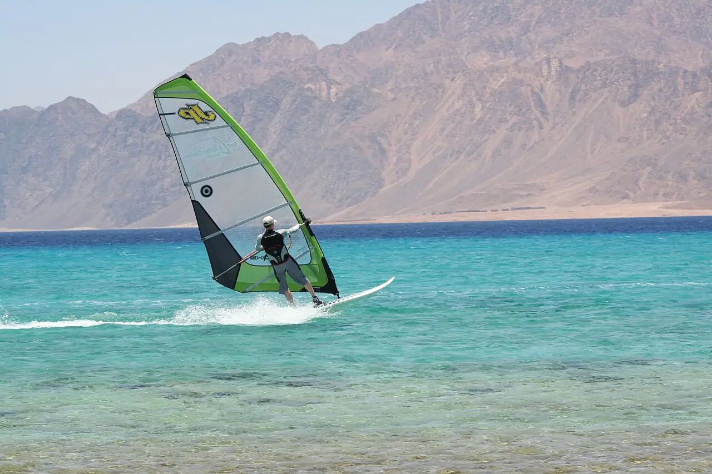

Lagune de Dahab
Sinaï du Sud, Égypte · windsurf, kitesurf

Lagune peu profonde au sud de la ville, derrière une langue de sable. Eau plate et vent de nord régulier en font un spot d’apprentissage du windsurf et du kite, avec des zones séparées pour chaque pratique.
- Lieu
- Sinaï du Sud, Égypte
- Niveau
- Débutant
- Activités
- windsurf, kitesurf
- Type d'eau
- Mer / océan
- Coordonnées
- 28.48, 34.50 (position approximative du secteur)
Dangers à connaître
- Vent souvent fort l’après-midi, qui pousse vers le large hors de la lagune.
- Récif et coraux en bordure de la lagune.
Le conseil d'Ocean Buddy
Respecte le zonage entre windsurf et kitesurf et demande aux centres où se trouve la limite du récif.
Ouvrir dans Ocean Buddy Télécharger sur l'App Store
Source : Fiche Ocean Buddy · septembre 2026 · à vérifier localement.